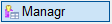
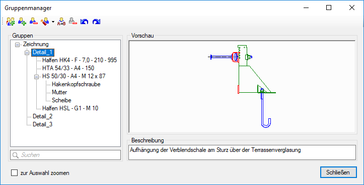
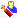
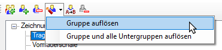
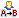
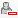
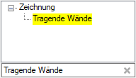
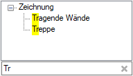
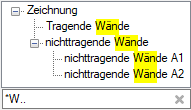

")

Erzeugen, Bearbeiten und Verwalten von individuell erzeugten Gruppen. Öffnet den Dialog Gruppenmanager.
Während der Arbeit mit dem Gruppenmanager stehen Ihnen alle Funktionen der unteren Menüleiste zur Verfügung.
 |
Diese Möglichkeiten haben Sie:
·Elemente zur Gruppe hinzufügen ·Elemente aus Gruppe entfernen |
Neue Gruppen werden immer in der Unterebene der markierten Gruppe erzeugt. Die Wurzelebene "Zeichnung" befindet sich in der Gruppenordnung an oberster Stelle.
§Markieren Sie die Gruppe, in der eine Untergruppe erzeugt werden soll und klicken Sie auf .
§Geben Sie eine Gruppenbezeichnung ein und bestätigen Sie mit der Eingabetaste.
–Wenn Sie keine Gruppenbezeichnung eintragen und bestätigen, wird die Gruppe mit *unbenannt* gekennzeichnet.
–Optional können Sie unter Beschreibung einen ergänzenden Text eingeben. Wechseln Sie anschließend die Gruppe oder klicken Sie auf OK, damit der Text übernommen wird.
Falls die Gruppe eine Untergruppe der Wurzelebene "Zeichnung" ist, wird die Gruppierung der enthaltenen Elemente vollständig aufgelöst und im Gruppenmanager nicht mehr angezeigt. Eine versehentlich gelöschte Gruppe können Sie mit wiederherstellen.
§Markieren Sie die Gruppe und klicken Sie auf

.§Klicken Sie in der ausgeklappten Liste auf den Eintrag "Gruppe auflösen".
Die Gruppe wird aus der Baumstruktur entfernt und ihre Untergruppen der nächsthöheren Gruppenebene zugeordnet.

Gruppe und alle Untergruppen auflösen
§Markieren Sie die Gruppe und klicken Sie auf .
§Klicken Sie in der ausgeklappten Liste auf den Eintrag "Gruppe und alle Untergruppen auflösen".
Die Gruppe wird mit allen Untergruppen aus der Baumstruktur entfernt. Alle enthaltenen Elemente sind nicht mehr gruppiert.
§Markieren Sie die Gruppe und klicken Sie auf

.Alternativ: Markieren Sie die Gruppe und klicken Sie diese an.
§Geben Sie einen neuen Gruppennamen ein und bestätigen Sie mit der Eingabetaste.
Beschreibung hinzufügen, ändern oder löschen
Sie können im Dialogbereich Beschreibung den Beschreibungstext der aktuell markierten Gruppe bearbeiten.
Führen Sie einen der folgenden Schritte aus:
a)Um eine Beschreibung hinzuzufügen, klicken Sie in das Eingabefeld und geben Sie den Text ein. Sie können auch einen Text über die Zwischenablage (Strg + C / Strg + V) aus einem anderen Dokument hineinkopieren.
Eine neue Zeile können Sie mit der Tastenkombination Strg + Eingabetaste einfügen.
b)Um die Beschreibung zu ergänzen, setzen Sie den Cursor per Mausklick oder mit den Pfeiltasten an die entsprechende Textstelle und geben Sie den neuen Text ein.
c)Um eine Beschreibung zu ändern, markieren Sie durch das Ziehen der Maus die Textstelle und geben Sie einen neuen Text ein.
d)Um den Text oder eine Textstelle zu löschen, markieren Sie den Text und drücken Sie die Löschtaste auf der Tastatur.
Wechseln Sie anschließend die Gruppe, damit die Änderung übernommen wird, oder bestätigen Sie mit der Eingabetaste (der Dialog wird geschlossen).
Elemente zu einer Gruppe hinzufügen
§Markieren Sie die Gruppe und klicken Sie auf .
Der Gruppenmanager wird ausgeblendet. Die Elemente der gewählten Gruppe werden auf der Zeichnung in der Farbe für Elemente im Hintergrund dargestellt.
[Option | SysDat | Konstruktionsprogramm | Farbeinstellungen → Elemente im Hintergrund].
§Ziehen Sie einen Rahmen durch das Anklicken von zwei Punkten um die Zeichenelemente, die in einer Gruppe zusammengefasst werden sollen, oder klicken Sie einzelne Elemente an. [1.Punkt/Element]; [2.Punkt].
Die Zeichenelemente werden markiert.
Sie können beliebig viele Rahmen aufziehen. Um eine Teilzeichnung wieder abzuwählen, klicken Sie im unteren Funktionsbereich auf Entfer und ziehen Sie einen Rahmen um die entsprechende Teilzeichnung. Wechseln Sie nach dem Abwählen wieder zurück zur Funktion Hinzuf, um ggf. weitere Elemente hinzuzufügen. Wenn Sie einzelne Elemente abwählen möchten, halten Sie die Umschalt-Taste gedrückt und klicken die Elemente nacheinander an.
§Bestätigen Sie die Auswahl mit Rechtsklick.
Die Zeichenelemente werden der Gruppe hinzugefügt und der Gruppenmanager wird wieder eingeblendet.
Elemente aus einer Gruppe entfernen
Einzelne Elemente können nur aus der in der Baumstruktur markierten Gruppe entfernt werden. Das Auswählen einzelner Elemente in Untergruppen ist nicht möglich.
§Markieren Sie die Gruppe und klicken Sie auf .
Der Gruppenmanager wird ausgeblendet und die Gruppenelemente markiert.
§Ziehen Sie einen Rahmen durch das Anklicken von zwei Punkten um die Zeichenelemente, die aus der Gruppe entfernt werden sollen, oder klicken Sie einzelne Elemente an. [1.Punkt/Element]; [2.Punkt].
Die Zeichenelemente werden markiert.
Sie können beliebig viele Rahmen aufziehen. Um eine Teilzeichnung wieder abzuwählen, klicken Sie im unteren Funktionsbereich auf Entfer und ziehen Sie einen Rahmen um die entsprechende Teilzeichnung. Wechseln Sie nach dem Abwählen wieder zurück zur Funktion Hinzuf, um ggf. weitere Elemente hinzuzufügen. Wenn Sie einzelne Elemente abwählen möchten, halten Sie die Umschalt-Taste gedrückt und klicken die Elemente nacheinander an.
§Bestätigen Sie die Auswahl mit Rechtsklick.
Die Zeichenelemente werden aus der Gruppe entfernt und der Gruppenmanager wird wieder eingeblendet.
Gruppen ohne Elemente entfernen
Die entsprechenden Gruppen werden ohne Rückfrage aus der Baumstruktur entfernt.
§Um alle leeren Gruppen zu entfernen, klicken Sie auf

.Sie können die Gruppe entweder unter- oder oberhalb einer anderen Gruppe platzieren oder als Untergruppe in eine andere Gruppe einfügen. Die Wurzelebene "Zeichnung" befindet sich in der Gruppenordnung grundsätzlich an der obersten Stelle und kann nicht verschoben werden.
Führen Sie einen der folgenden Schritte aus:
a)Möchten Sie eine Gruppe unter- oder oberhalb eine andere Gruppe setzen, ziehen Sie die Gruppe in der Baumstruktur nach oben oder nach unten. Lassen Sie die Maustaste los, wenn die hervorgehobene Linie an der gewünschten Stelle angezeigt wird.
b)Möchten Sie die Gruppe in eine andere Gruppe verschieben, ziehen Sie die Gruppe über eine andere Gruppe. Lassen Sie die Maustaste los, wenn die entsprechende Gruppe blau markiert wird.
Durchsucht werden Gruppennamen.
§Klicken Sie unter der Baumstruktur in die Suchmaske.
§Geben Sie den Suchtext (z. B. Tragende Wände), die ersten Zeichen (Tr) oder Platzhalter und Zeichen (*Wände oder *W..) ein.
Die Suchergebnisse werden in der Baumstruktur gelb hervorgehoben. Nicht zutreffende Gruppennamen werden ausgeblendet. Sollte kein Suchergebnis gefunden werden, wird in der Baumstruktur nur die Wurzelebene "Zeichnung" angezeigt.
Suchtext ausgeschrieben |
Eingabe der ersten Zeichen |
Platzhalter und Zeichen |
 |
 |
 |
§Klicken Sie auf ein Suchergebnis, um die Vorschau anzuzeigen.
§Um Eingaben aus der Suchmaske zu entfernen, klicken Sie auf .
Zugehörige Aufgaben:
·Gruppierte Elemente auswählen und bearbeiten
·Elemente auswählen (Selektion)
Zugehörige Referenzen: